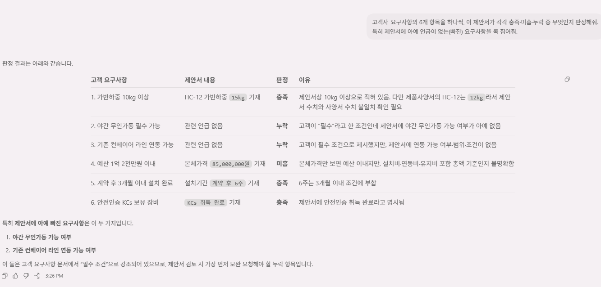

// 실습 6 · 제안서 내용 검증하기
2 · 관점별 검증¶
1단계에서 봐야 할 항목이 체크리스트로 나왔으니 이제 실제 검증입니다. 여기가 오늘의 핵심인데, 많은 사람이 "그냥 검토해 줘" 한 방으로 끝내려다 실수합니다. 쓰레기를 넣으면 쓰레기가 나옵니다.
전체를 뭉쳐 시키지 말고 관점을 나눠 독립적으로 세 번 검증해야 결함이 제대로 걸립니다. 특히 틀린 건 눈에 띄지만 빠진 건 잘 안 보이니, 고객 관점에서 누락을 따로 훑습니다.
세 가지 검증 관점¶
① 사실 검증 — 제안서 숫자가 사양서와 맞는가 (가반하중·인건비 절감액 등)
② 고객 입장 — 요구사항 6개가 다 담겼는가 (틀린 것보다 빠진 것이 안 보임)
③ 검토자 입장 — 두괄식인가, 과장·법적 위험 표현은 없는가
직접 시켜보세요¶
한 번에 다 묻지 말고 위 세 관점을 각각 따로 시킵니다. 아래 두 체크리스트를 담으세요.
프롬프트에 꼭 담을 것 ✅¶
- 한 번에 한 관점 — 사실 / 고객 / 검토자를 각각 별도로 시키기
- 대조 근거 — 제안서 값 ↔ 사양서·요구사항 값을 나란히 짚기
- 누락도 신고 — 요구사항 6개 중 제안서에 빠진 항목을 콕 집기
- 과장·법적 표현 — 근거 없는 최상급("1위"·"고장률 0%")을 사실 여부와 함께
이런 건 빼세요 ❌¶
- 세 관점을 한 프롬프트에 뭉쳐 "종합 검토해줘"
- 틀린 값만 보고 누락은 넘기기 (안 보여서 더 위험)
- 맞는 부분까지 굳이 고치기 (문제 있는 곳만 손대기)
예시 프롬프트¶
여러분 문장을 먼저 보낸 뒤에 열어보세요. 세 번에 나눠 시킵니다.
① 사실 검증
영업제안서_초안의 숫자를 제품사양서와 한 줄씩 대조해줘.
제안 모델의 가반하중, 인건비 절감액, 가격 등이 사양서 값과 일치하는지 확인하고,
다른 값은 '제안서 값 vs 사양서 값'으로 나란히 짚어줘. 추측하지 말고 자료에 있는 값만 써.
② 고객 입장
고객사_요구사항의 6개 항목을 하나씩, 이 제안서가 각각 충족·미흡·누락 중 무엇인지 판정해줘.
특히 제안서에 아예 언급이 없는(빠진) 요구사항을 콕 집어줘.
③ 검토자 입장
이 제안서를 검토자 관점에서 봐줘. 결론·가격이 앞머리에 있는지(두괄식),
그리고 근거 없는 최상급이나 법적으로 위험할 수 있는 표현('점유율 1위'·'고장률 0%' 등)을
자료로 뒷받침되는지와 함께 짚어줘.
실행 예시¶
이렇게 나오면 됩니다

체크포인트¶
- 세 관점을 각각 따로 시켰다
- 사양서와 불일치하는 값을 나란히 짚었다 (가반하중·인건비 절감액 등)
- 요구사항 중 누락된 항목을 집어냈다
- 근거 없는 과장·법적 위험 표현을 찾아냈다